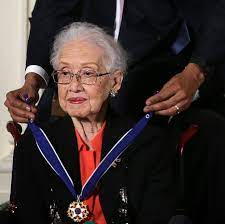
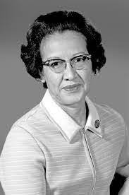
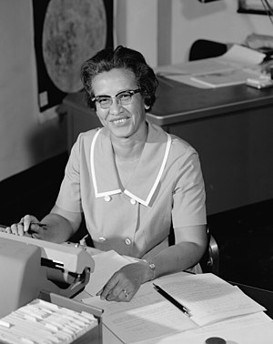

Katherine Johnson foi uma matemática, física e cientista espacial norte-americana.
Ela fez contribuições fundamentais para a aeronáutica e exploração espacial dos Estados Unidos, em especial em aplicações da computação na NASA. Conhecida pela precisão na navegação astronômica informatizada, seu trabalho de liderança técnica na NASA se estendeu por décadas onde ela calculava as trajetórias, janelas de lançamento e caminhos de retorno de emergência para muitos voos de Projeto Mercury, incluindo as primeiras missões da NASA de John Glenn, Alan Shepard, o voo da Apollo 11, em 1969, à Lua e trabalho contínuo por meio do programa dos ônibus espaciais e sobre os planos iniciais para a missão a Marte.
Em 2016, foi incluída na lista de cem mulheres mais inspiradoras e influentes pela BBC.
Katherine Coleman Goble Johnson nasceu em 26 de agosto de 1918
Muito cedo, Katherine mostrou talento para matemática e seus pais enfatizavam a importância da educação para os filhos.
Katherine formou-se no ensino médio, aos 14 anos. Aos 15 anos, ela iniciou os estudos na universidade, onde estudou em todos os cursos que ofereciam matemática. Vários professores apadrinharam-na, incluindo a matemática e química Angie Turner King, que a orientou durante o ensino médio e W.W. Schiefflin Claytor, o terceiro negro a receber um doutorado em matemática no país, que chegou a criar novos cursos de matemática especialmente para Katherine. Ela se formou em 1937, com notas máximas em matemática e francês, aos 18 anos. Depois da formatura, ela se mudou para Marion, Virginia, para ensinar matemática, francês e música em uma escola de ensino infantil.
Em 1939, Katherine se tornaria a primeira negra a se dissociar da graduação na Universidade da Virgínia Ocidental, em Morgantown e a única mulher entre três estudantes negros selecionados a integrar a graduação depois da decisão da Suprema Corte dos Estados Unidos, que decidiu separar as escolas e universidades para negros e brancos. As universidades estaduais seriam instituições para brancos e a universidade Lincoln deveria criar cursos para atender a negros. Caso não houvesse cursos, outras universidades deveriam atender aos alunos.
Katherine optou pela matemática, com interesse em pesquisa na área, um caminho com muitas portas fechadas para negras na época. Os primeiros empregos que conseguiu eram para lecionar. Em uma reunião de família, um parente mencionou que a NACA, que viria a se tornar a NASA, estava com processo seletivo aberto para mulheres, em especial negras, para seu departamento de navegação. Katherine inscreveu-se em 1953 e foi imediatamente aceita no novo time da NASA.
De 1953 a 1958 ela trabalhou como computadora, fazendo análises para tópicos como a redução da rajada para as aeronaves. Originalmente designada para a seção da West Area Computers, onde era supervisionada por Dorothy Vaughan, Katherine foi redesignada para a Divisão de Controle e Orientação da Divisão de Pesquisa de Voo. Porém, Katherine e as outras mulheres negras da divisão de computação eram conhecidas como "computadoras de cor" e sujeitadas à segregação, trabalhando, comendo e usando banheiros separados de seus colegas brancos até que essa divisão segregada fosse terminada em 1958.
De 1958, até sua aposentadoria em 1986, ela trabalhou como técnica aeroespacial. Katherine ainda trabalhou para a seção de Controles aeroespaciais, onde calculou a trajetória de voo de Alan Shepard, o primeiro norte-americano no espaço, em 1959. Calculou também a janela de lançamento do Projeto Mercury, em 1961. Katherine plotou cartas de navegação, orientando naves pelas estrelas em caso de falha eletrônica e, em 1962, verificou os primeiros cálculos de computador da órbita de John Glenn ao redor da Terra. Glenn pediu por ela pessoalmente para verificar os números de seu computador de bordo e se recusou a voar até que ela fizesse a verificação.
Em seguida, Katherine trabalhou com computadores digitais, tais como os conhecemos hoje. Sua habilidade e reputação por precisão em cálculos deu confiança aos colegas para trabalhar com a nova tecnologia. Ela calculou a trajetória da missão Apollo 11, em 1969. Durante o pouso, Katherine estava em uma reunião nas montanhas Pocono, ao redor da televisão junto de várias outras pessoas, assistindo aos primeiros passos na Lua.
Em 1970, ela trabalhou na missão da Apollo 13. Assim que a missão foi abortada, Katherine trabalhou nos procedimentos de backup e nas cartas que auxiliaram o retorno em segurança dos astronautas para a Terra, quatro dias depois. Mais tarde, Katherine ainda trabalharia no programa dos ônibus espaciais, nos satélites de observação terrestres e na futura missão a Marte.
